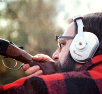

1. The only way to leearn to ""shoot where it's gonna be"" is to practice. 2. A sling will free your hands. 3. Most anyone can learn to load a shotgun rapidly. 4. Clay pigeons, thrown by an assistant, provide good ""moving targets"" for practice. 5. Wear earmuffs and glasses when shooting. 6. In some situations, a rifle can do a job that a shotgun can't. 7. If you're careful to keep your firearm oiled... 8. and cleaned, it should last long enough for you topass it on to your grandchildren.